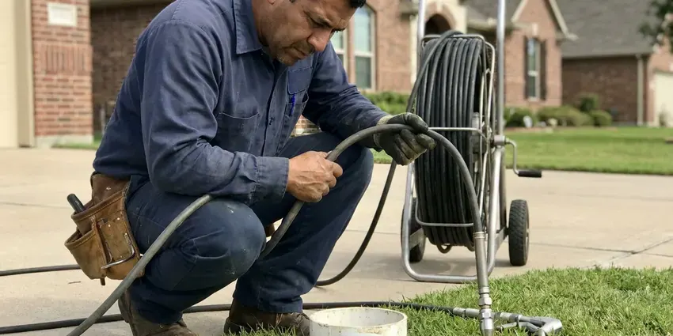

Water Line Repair in Portales, NM
Your meter is spinning with every tap off. That is a leak. We pinpoint it with ground microphones in Portales, NM.
- Licensed Technicians
- Pressure tested before backfill
- Written Prices Up Front
- One small dig, not trenches

Meter Still Spinning With Everything Off in Portales, NM?
Our trucks carry copper, PEX and poly fittings, so most repairs finish in one visit.
Service Line Repair From the Meter to Your House in Portales, NM
GVK Plumbing carries fittings for every common service line material on the truck, including Type K copper, PEX and HDPE. That matters on a weekend break. Most repairs get done on the first trip. You see the condition of the exposed pipe before deciding between a spot repair and a full replacement, and the written quote spells out both.
Work we handle every week:
- Tracer gas testing on quiet leaks
- Type K copper, PEX and HDPE water mains to the house
- Pressure reducing valve and house shutoff replacement

Additional Plumbing Maintenance Services in Portales, NM
Our maintenance and specialty plumbing services in Portales, NM catch small problems before they become emergencies.


Customers
Why Choose GVK Plumbing for Water Line Repair in Portales, NM?
A water line repair is mostly about the locate. Guessing means digging three holes. We use a ground microphone, a line tracer and sometimes tracer gas to put the hole within a foot or two of the leak, which saves your lawn and a good share of the labor bill.
- Stocked Trucks, Fittings for copper, galvanized, poly and PEX ride on every truck, so most jobs finish in one trip.
- Pressure Tested, Every repaired line is pressure tested before the trench is backfilled.
- Right Materials, New sections go in with Type K copper, PEX or HDPE rated for direct burial.
Citywide Coverage
Portales has a mix of old and new service lines, and we see all of them. Houses from decades back tend to have galvanized. Newer ones run PEX or poly. Our crews carry the right fittings for each, so a leak in any part of town usually gets fixed on the first trip.
Experienced Team
The GVK Plumbing crew works to the New Mexico plumbing code on every repair. Approved fittings only. They pull permits when a job needs one, and they leave the trench ready for the inspector instead of buried before anyone looks.
Safety-First Approach
Before the water goes back on, we flush the repaired line to clear sediment and air. Air in a line bangs. Then we open the house slowly, bleed the air out at the highest fixture and check every joint we touched.
Trusted Certified Portales Plumbing Services Professionals
At GVK Plumbing, we take pride in licensed, certified plumbing services throughout Portales, NM. Those papers on the wall mean something. Every repair, install and maintenance visit follows strict safety and quality rules, and the plumbers doing the work carry recognized industry credentials.
Call Us Now PHCC Plumbing Contractor Recognition
PHCC Plumbing Contractor Recognition Better Business Bureau (BBB) Accreditation
Better Business Bureau (BBB) Accreditation Angi Certified Pro
Angi Certified Pro ISO 9001 Quality Management Certification
ISO 9001 Quality Management CertificationWater Line Repairs We Handle in Portales, NM
Slab Leak Water Line Repair in Portales
A slab leak is a supply pipe leaking under the concrete floor of the house. Newer homes around Portales mostly use PEX or copper supply lines, while older properties may still have galvanized steel that chokes water flow. Signs include a warm spot on the floor, the sound of running water and a meter that moves with everything off. Acoustic gear and a thermal camera tell us where it is. From there you have three choices: break the slab at the spot, reroute the line through the walls or attic, or skip the old under-slab pipe and repipe overhead with PEX. You get a price on every option.

Underground Leak Detection in Portales, NM
A ground microphone picks up the hiss of water escaping a pressurized pipe, even through a couple of feet of dirt. Quiet leaks are harder. For those we push a hydrogen and nitrogen tracer gas into the drained line and sniff for it at the surface, which finds leaks the microphone cannot hear. Most homes sit on concrete slabs, so leaks under the floor often call for slab leak detection before any repair begins. You get a written price as soon as the leak is marked on the ground.
Pipe Bursting and Pulling in Portales
Pipe bursting means splitting the old line in place while the new one follows behind it. Straight runs are ideal. A cone-shaped head breaks the old pipe outward, while new HDPE comes through right behind the head. You end up with a fresh line and two small pits, and the lawn, sidewalk and driveway in between stay where they are, which is the whole reason people pick this method over a trench.
Underground Water Line Leak Repair in Portales
Underground leaks hide well. Many people find out from the bill before they see anything in the yard. Others notice a patch of grass that grows greener than the rest, or a spot near the walk that stays muddy days after rain. We confirm the leak at the meter, trace the pipe route and listen along it. We dig where the noise is loudest.
Trenchless Water Line Repair in Portales
Trenchless work makes sense when the line runs under a driveway, patio or a row of mature shrubs. We dig a pit at the meter and another at the house. The new line travels between them without a trench. A pneumatic boring tool or a cable puller drags HDPE or PEX through the soil, or through the old pipe if it is a straight run, and most jobs wrap up in a single day.
Emergency Water Line Repair in Portales, NM
First thing on a burst line is shutting the water off, at the house valve if it works and at the curb stop if it does not. Water pouring into a yard undermines everything around it. GVK Plumbing sends a plumber with a curb key, a pump and repair couplings. Most breaks are shut down quickly. If the repair will run long, a temporary bypass keeps water flowing to the house during the repair.
Commercial Water Line Repair in Portales, NM
Commercial service lines are often 1 1/2 to 4 inch pipe feeding a meter bank, a backflow assembly and sometimes a fire line. A break shuts the business down. GVK Plumbing can schedule repairs early in the morning or after closing, and we bring the larger fittings and couplings on the truck. We also arrange the backflow test and inspection that most water providers require after work on the commercial side of the meter.

Repair vs. Replace Your Water Line in Portales, NM
One leak on a newer copper or PEX line is a spot repair. Repeated leaks on galvanized pipe call for a new line. Age matters too, and a line past about 40 years is usually near the end no matter the material. Spot repairs often run a few hundred dollars while a full replacement costs more and resets the clock for decades. We show you the pipe we exposed.
Local Water Line Repair in Portales, NM
Homeowners in Portales call us for the same handful of reasons: a wet yard, low pressure, rusty water, a big bill. It comes up week after week. Each one starts with a meter test and a walk along the pipe route, and the majority finish with one repaired coupling and one small hole.
Searching "water line repair near me" in Portales, NM usually means water is coming up somewhere it should not. GVK Plumbing runs trucks out of the area, which means we can usually get someone to your meter today. We bring the parts with us. That cuts out the extra trip to the supply house that drags a one-day repair into two.
GVK Plumbing at a Glance
- Licensed and insured plumbers serving Portales, NM
- Same-day appointments and 24/7 emergency response
- Clear written estimates, no hidden fees
- 4.8-star rated by 320+ New Mexico customers
Portales Map
Portales Information
- Population
- 11,859
- Area codes
- Local
- Service area
- Portales and towns within a 40 mile drive
- Nearby
- Clovis, Lovington, Roswell, Hobbs
Water across New Mexico is generally hard and mineral-heavy, so scale builds up quickly in water heaters, faucets and appliance valves. Scale inside older pipe and movement in the soil wear on service lines for years in Portales, NM, and the first sign is usually a wet spot that never dries.
Talk to a Plumber
Reach out to GVK Plumbing for honest, reliable plumbing from people who know the trade in Portales, NM.
Our Specialized Plumbing Services in Portales, NM
At GVK Plumbing, you get every kind of plumbing service from one company across Portales, NM. We go from leak detection all the way to full system installations, for homes and commercial buildings, and we do it quickly at a fair price. Take a look at our core services below:


How a Water Line Repair Works in Portales, NM
Expect a meter test, a locate, a written price and then the repair, usually all in one visit.
Describe the Problem
Phone GVK Plumbing at (505) 581-4975 and describe the symptoms. We will ask if your meter moves with everything off.
Find the Leak
A plumber isolates the house, gauges the pressure and pinpoints the leak with a ground microphone. Then we write up your options.
Fix It Right
Once you approve, we repair or replace the line with code-approved pipe and fittings. It gets a pressure test before backfill.
Frequently Asked Questions About Water Line Repair in Portales
Spot repairs on an accessible line usually run $350 to $1,500. Depth drives most of that. A trenched meter-to-house replacement is typically $1,800 to $5,500, while trenchless replacement tends to run $3,000 to $7,000 since it needs a boring rig or puller. The written price comes before we start.
In most places the water provider owns the meter and the pipe on the street side of it. The homeowner owns the line to the house. Some providers draw the line at the curb stop instead, so before quoting we check exactly where the leak is. If it turns out to be theirs, we tell you and help you report it.
Age is the biggest cause. Old pipe corrodes. Shifting soil, tree roots, high water pressure and freeze-thaw cycles all add stress, plus accidental hits from fence posts, irrigation trenching and utility work. Poor original installation is another, such as pipe laid on sharp rock.
Two to four hours for most spot repairs. A full replacement is typically a one-day job. Trenchless jobs are often a single day too, even with a few hours spent setting the pits and the rig. In most cases your water is back on before evening.
For PEX we use Uponor and Viega, depending on the job. Buried copper is always Type K. Couplings and transition fittings come from makers like Mueller and Ford, and we stick with fittings rated for direct burial in the soil conditions we find. Off-brand fittings stay off the truck.
Green grass in one strip is a big one. So is mud that never dries. You may also notice pressure dropping at every fixture, a rising water bill, cloudy water or a hiss near the meter. If you see two or more of these together, it is worth a meter test.
You can tighten an exposed fitting at a hose bib. The buried line is a different job. They need the leak located, utility marking, careful excavation and burial-rated fittings. A mistake means a bigger leak and the same hole dug twice.
A loose fitting on an exposed hose bib, sure. The buried main is different. You need the leak located, utility lines marked, a safe excavation and burial-rated fittings under the New Mexico plumbing code. A bad joint underground means digging the same hole twice. That is why most people call a plumber.
What People Are Saying About Our Plumbing Experts?

Karen W.
After our third pinhole leak in copper, we stopped patching. GVK Plumbing gave us a written plan room by room and repiped the house in PEX while we stayed in it. The crew covered our floors every morning and cleaned up every night.
Repiping · Roswell, NM
Tyler J.
We bought a taller comfort height toilet for my dad, who just had knee surgery. The plumber pulled the old one, found the flange was cracked, and replaced it before setting the new bowl. Took about two hours.
Toilet Installation · Lovington, NMNathan E.
Our tankless heater kept throwing an error code and shutting off mid shower. The tech flushed the heat exchanger, which was full of scale, and replaced a bad flow sensor. Hot water has been steady for half a year now.
Water Heater Repair · Roswell, NM
James P.
Our restaurant had a slow leak at the hand sink that was rotting the cabinet base. GVK Plumbing came in at six in the morning before prep, replaced the trap and both supply lines, and was packed up before my first cook clocked in.
Commercial Plumbing · Clovis, NM
Rachel N.
Hard water was leaving white crust on every faucet and our dishwasher was struggling. The tech tested the water, recommended a softener sized for a family of five, and installed it with a bypass valve in one afternoon. The spots on our glasses are gone.
Water Softener · Roswell, NM
Greg S.
I manage a small strip center with six tenants. GVK Plumbing handles our annual backflow testing and fixed a recurring clog in the shared sewer line that had been backing into the nail salon. Their reports come in clean and on time.
Commercial Plumbing · Roswell, NM